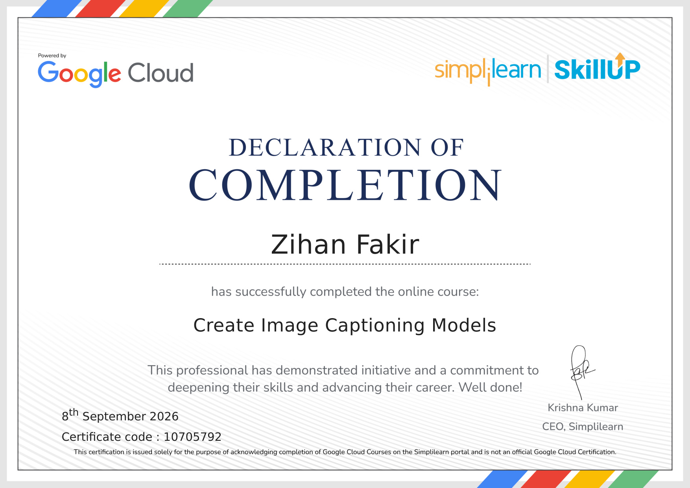
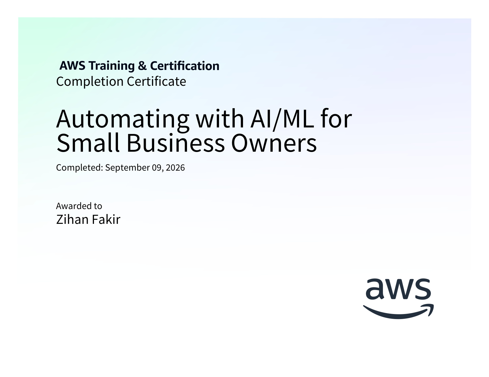

Hello, World! I am
Zihan Fakir
Passionate full stack software engineer and AI-driven builder. By harnessing the power of modern LLMs, autonomous coding agents, and prompt engineering, I build and ship production software 10x faster than traditional development workflows without compromising architectural purity.
Architecting Scalable Systems & Modern Web Experiences
Bridging algorithmic software principles with modern autonomous artificial intelligence.
Full-Stack Software Engineering Meets Autonomous Intelligence
Hello! I am Zihan Fakir (widely known across developer networks as @zihanfakir or zihan). As creator of zihan.uk, I specialize in architecting high-velocity web platforms, custom generative AI integrations, and distributed cloud microservices.
Over 4+ years of professional engineering, I have focused on solving real-world performance bottlenecks: cutting server latency by 42%, maintaining 99.9% application stability, and orchestrating multi-model AI agent pipelines (Gemini, Claude, DeepSeek, OpenAI) with zero client API exposure.
Featured Production Systems
Hand-picked flagship software applications architected for reliability, speed, and real-world scale.
 Flagship AI
Flagship AI
Alora AI — Multi-Model AI Platform
Production-ready multi-model generative AI chat application powered by 11 cutting-edge LLMs (Gemini, Claude, DeepSeek, GPT). Features zero client-side API key exposure, real-time token streaming, and multimodal understanding.
 Full Stack
Full Stack
Ecomace — Modern E-Commerce
High-performance full stack retail shopping experience built with React and Express, featuring render-as-you-fetch data streaming, persistent cart, and product search.
 Search & Crawler
Search & Crawler
Alokpo — Web Search Engine
Custom web search engine and indexing engine with a decoupled architecture: modern search UI communicating with dedicated crawler and ranking backend APIs.
Core Engineering Capabilities
Specialized technical domains where I drive maximum software impact.
Generative AI & LLMs
Orchestrating production AI agents with Gemini 2.5, Claude 3.7, DeepSeek, and OpenAI. Implementing vector search, token optimization, and zero client key exposure.
Full-Stack Web Architecture
Architecting ultra-fast, responsive web user interfaces with React 19, Next.js 15, TypeScript, and modern CSS. Flawless 60fps micro-interactions and Core Web Vitals.
Backend & Distributed Systems
Building resilient REST and GraphQL APIs, real-time WebSockets, microservices, and database schemas with PostgreSQL, MongoDB, Redis caching, and Docker containers.
Performance & Code Quality
Refactoring high-complexity codebases, eliminating DOM thrashing, enforcing SOLID patterns, securing OWASP vulnerabilities, and automating CI/CD pipelines.
Verified Honors & Certifications
Accredited credentials across Google, AWS, Microsoft, and global institutions.

Create Image Captioning Models
Computer vision, multimodal neural networks, encoder-decoder architectures, and deep learning models.
Business Analytics with Excel
Advanced data analytics, business modeling, regression analysis, and data-driven decision intelligence.

Automating with AI/ML on AWS
Official AWS curriculum covering automated machine learning pipelines, cloud AI, and operational efficiency.
Explore Zihan's Full Portfolio
Access dedicated, category-based portfolio pages for comprehensive insights.
Academic Background
Computer Science & Engineering honours degree, algorithmic coursework, and theoretical foundations.
Official Resume / CV
Interactive curriculum vitae with work history, systems impact, and print/download PDF capabilities.
Get In Touch
Direct email, WhatsApp messaging, and project inquiry form with guaranteed 12-24h turnaround.